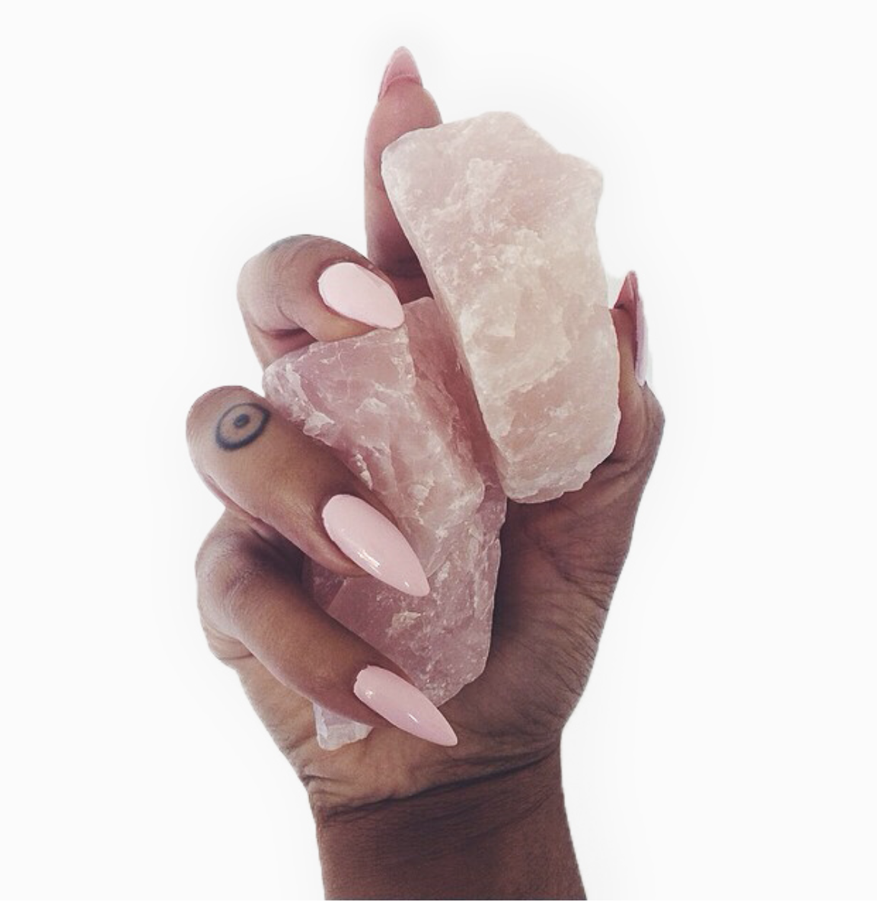

Rose Quartz-Unconditional love, heals and opens heart, calms, reassures, Releases unexpressed emotions, soothes internalized pain. Rose Quartz nurtures and aids in the use of positive affirmations. Self-Trust and Self-love. Rose Quartz has the ability to teach one how to love one’s self, encourages forgiveness and acceptance.
Smoky Quartz is an extremely protective stone associated with the root chakra. It protects against negative energies by gently dissolving any negative emotions it comes into contact with. For this reason it is a useful stone to have around when you are dealing with difficult situations or people. Smoky Quartz is believed to protect against pollution, radiation and electromagnetic smog. Smoky Quartz is also believed to help lift depression, reduce fear and to help relieve stress.
Amethyst-Increases spiritual awareness, calms the nervous system, supports sobriety. Amethyst is a wonderful aid for insomnia, while promoting selflessness. Amethyst clusters have points that radiate energy outward in many directions, creating an energetic force that is powerful to its surroundings.
Amethyst is one of the most effective crystals for healing people, plants that won’t grow, and calming animals. Amethyst crystal clusters are used to keep the air and life force in the home clean and positive.
White Sage is a very sacred and powerful plant. It has been used since ancient times by shaman, medicine men, and healers. Today it is the most popular herb used for cleansing. In purification rituals the smoke gathers negativity and dispels it while bringing in the positive. It aids in healing physical, emotional, spiritual, and mental imbalances. This works on the body as well as in the home.
Palo Santo literally translates to “Holy Wood”. A powerful cleanser with a rich earthy aroma. Palo santo is a dense wood that is rich in substance and good vibrations.
Y MAS